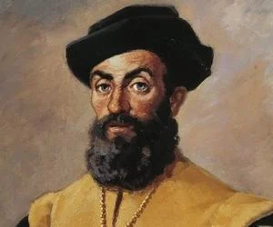
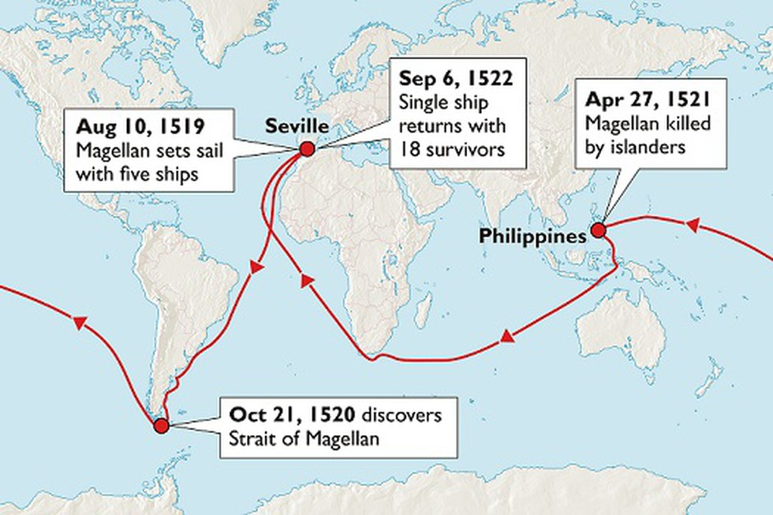

FERDINAND MAGELLAN

Ferdinand Magellan was a Portuguese navigator and explorer who became the first European to sail the Pacific Ocean and the first to sail around the world. Magellan's voyage is said to have proved that the Earth was round. He was also the first to sail through the Strait of Magellan, so it was named after him.
Magellan's parents were members of the Portuguese nobility, after their deaths, he became a page for the queen at the age of 10. In the royal court, he learned many important skills, including map-making, navigation, and astronomy.
In 1505, when he was 25, he joined the navy.

Magellan's expedition

Nao Victoria, the ship accomplishing the circumnavigation and the only to return from the expedition.
TIMELINE
- Mar 1518~Charles I of Spain formally accepts the proposal of Ferdinand Magellan to sail to Asia via the Americas.
- Aug 1519~The carrack Victoria is launched in Gipzkoa in Spain. It will be the only ship of Ferdinand Magellan's fleet to circumnavigate the globe.
- 10 Aug 1519~Ferdinand Magellan's five-ship fleet leaves Seville to circumnavigate the globe.
- Dec 1519~Ferdinand Magellan's circumnavigation fleet arrives in Rio de Janeiro.
- 21 Mar 1520~Ferdinand Magellan's circumnavigation fleet winters at San Julián Bay in southern Argentina.
- 21 Oct 1520 ~ 28 Nov 1520:Ferdinand Magellan's circumnavigation fleet sails through the Straits of Magellan in Tierra del Fuego.
- Nov 1520~San Antonio, a ship in Ferdinand Magellan's circumnavigation fleet, returns to Spain.
- 24 Jan 1521~Ferdinand Magellan's circumnavigation fleet spots their first land after crossing the Pacific Ocean, an island they call San Pablo.
- 7 Apr 1521~Ferdinand Magellan's circumnavigation fleet reaches the Philippine Islands.
-
27 Apr 1521~Ferdinand Magellan is killed in a battle on Cebu in the Philippines.